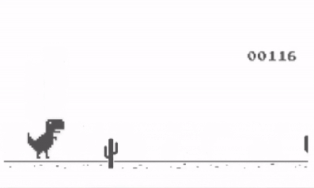
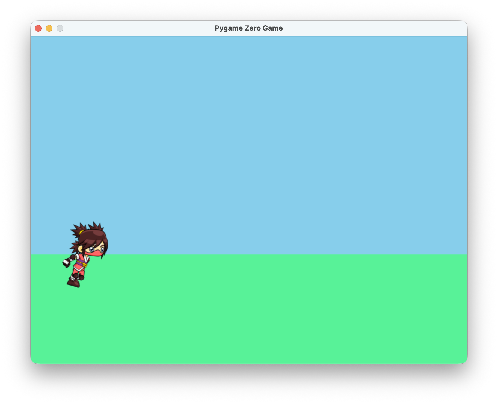
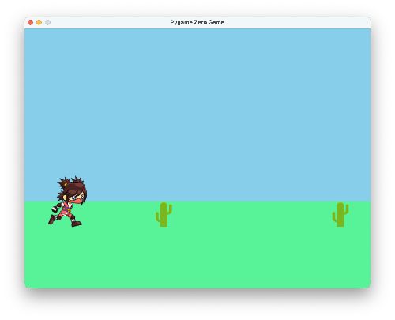
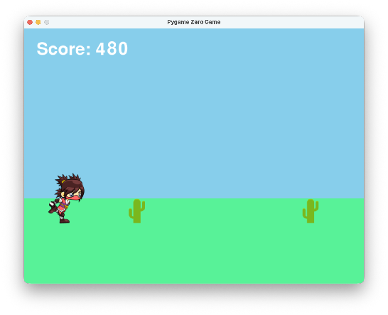
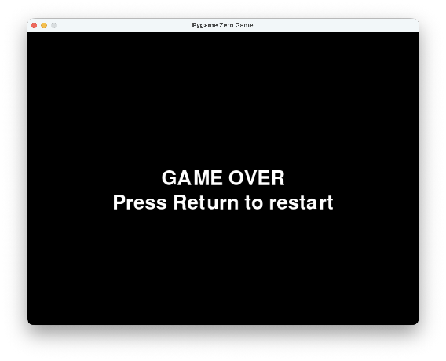
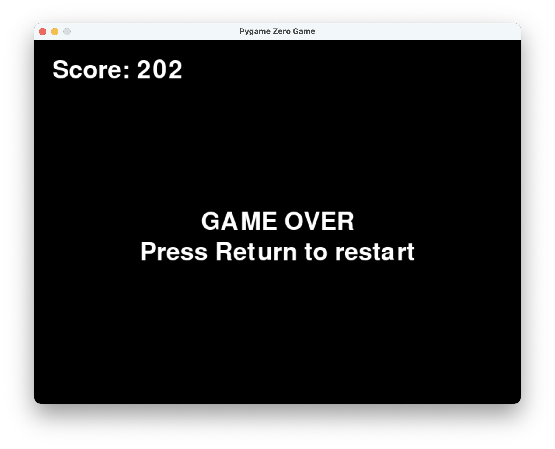
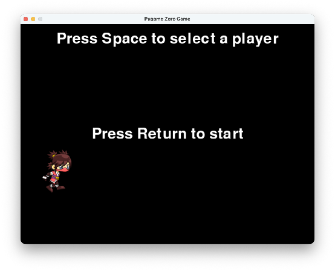

Multiple Worlds and Game Over Reset
This is the big one: an infinite runner with a character-select screen, a running score, a Game Over screen, and a reset that puts everything back for the next round. The secret to keeping all of that manageable isn't more code — it's smaller functions.
Overview
In this lab you'll build an infinite runner and organize it into modes —
costume, play, and game over — each with its own drawing and behavior.
Along the way you'll animate a running character from a list of images,
spawn obstacles on a timer, and write a reset() function that restarts the
game cleanly.
Builds on: Tiled Images, Animated Motion, and Health — helper functions, lists of Actors, and collidelist().
Before you start
Open Thonny and start a new program named runner.py. Save it in your
pygame-zero folder, next to your images folder.
You've got it when…
- The game opens on a costume screen where Space changes characters and Enter starts the game.
- The runner animates, jumps with Space, and dodges cacti that arrive on a timer.
- Hitting an obstacle shows Game Over with the final score still visible.
- Pressing Enter from Game Over resets everything and returns to the costume screen.
Collaboration & AI
Work: On your own. Ask a neighbor for a hand if you're stuck, but the program you submit should be yours.
AI — AIAS Level 1, No AI: The whole point of this lab is learning to organize a bigger program yourself. What the levels mean.
New Images
This lab requires a lot of new images — three full costumes plus a cactus. If
you completed Getting Set Up for Pygame Zero,
they are already in your images folder and you can skip these steps.
-
Download the zip file of images.
-
Double-click the zip file to open it. It will create a new folder next to the zip file with the same name.
-
Move the images from the new folder into your game's
imagesfolder.
Overview of the Game
We're going to make an infinite runner type game. Dino Jump is an example of this type of game.

Making Functions
We're going to focus on breaking up our code into a number of small functions to organize our game. This will help us add new behaviors, such as showing different screens for selecting a character and resetting the game after a Game Over screen is shown.
-
Let's start a new game with the code below.
runner.pyimport pgzrun WIDTH = 800 HEIGHT = 600 runner = Actor("ninja0") runner.x = 100 runner.y = 400 def draw(): screen.fill("skyblue") screen.draw.filled_rect(Rect(0, 400,800, 200), (88, 242, 152)) runner.draw() pgzrun.go()Try your program. Your screen should look like this.

Modes
When we're done, we want our game to have three modes:
- costume — this mode will show a start screen where the player can choose a character.
- play — this mode will show the game itself.
- game over — this mode will show a Game Over screen with an option to reset.
We'll need to keep track of which mode we're currently in, to know how to update and what to draw. Let's create a variable for this.
-
Add the highlighted line. We'll call the normal game mode play.
-
Now let's take the code from our
draw()function and put it in a helper function that will be used to draw the game when in play mode. We'll name this functiondraw_game(). -
Finally, we need to call our
draw_game()function from thedraw()function, but only if we are in play mode. Replace the code in thedraw()function so it looks like this.Try your program. Your screen should look like it did before.
Animation
Let's add a list of images to animate the character running. We'll also need to keep track of which image is currently shown, so we know which to move to on the next frame.
-
Add the highlighted lines.
-
Add this function to change to the next image in the list.
def next_runner_image(): runner.image = runner.images[runner.img_num % len(runner.images)] runner.img_num += 1Something new!
Instead of writing out the line to add one like this:
we'll use this shorter version:
These two lines do exactly the same thing! The
+=operator is built into Python because we do addition so often as programmers. You can also subtract one like this: -
Call the
next_runner_image()function from theupdate()function.Try your program. Your character should be animated to move like it is running.
Keyboard Input
Now we'll make the character jump when Space is pressed. We'll use the
built-in on_key_down() function to capture key presses.
-
Define variables for the level of the ground and gravity. Add the highlighted lines.
-
Define a variable on the runner to keep track of vertical speed. Add the highlighted line.
-
Add the built-in
on_key_down()function to listen for key presses. We only want to jump if we're in play mode. -
Add a helper function to handle gravity.
-
Finally, call the
apply_gravity()function from theupdate()function, but only if we're in play mode. Add the highlighted lines.Try your program. The character should jump when Space is pressed, then fall back to the ground.
Obstacles
Next we'll add obstacles to jump over, and a timeout to keep track of how often new obstacles appear on the screen.
-
Add the highlighted lines to create a list to hold obstacles and a timeout.
-
Create a helper function to handle creating obstacles and moving them from right to left on the screen.
-
Call the helper function from the
update()function. It should only be called when we're in play mode. Add the highlighted line. -
Finally, add code to draw each obstacle in our drawing helper function. Add the highlighted lines.
def draw_game(): screen.fill("skyblue") screen.draw.filled_rect(Rect(0, 400,800, 200), (88, 242, 152)) runner.draw() for o in obstacles: o.draw()Try your program. You should see obstacles appear at the timeout interval and move across the screen.

Score
We'll keep score by counting each frame. The longer the player goes without hitting an obstacle, the higher the score.
-
Create a variable to keep track of the score, starting from zero. Add the highlighted line.
-
Add one to the score in the
update()function for each frame, but only if we're in the play mode. Add the highlighted line. -
Add a helper function to draw the score on the screen.
-
Finally, call the helper function from the
draw()function. Add the highlighted line.Try your program. The score should be constantly increasing, shown in the upper-left corner.

Game Over and Reset
When the character touches an obstacle, the game ends. We want to show a Game Over screen and provide an option to reset and start a new game.
When the game ends, we'll move from the play mode to the game over mode.
-
Create a helper function to check if the character has collided with an obstacle. If so, change the mode to game over.
-
Call the helper function from the
update()function. Add the highlighted line. -
Create a helper function to draw the screen when we're in the game over mode.
-
Call the helper function from the
draw()function when we're in the game over mode. Add the highlighted lines.def draw(): if runner.mode == "play": draw_game() draw_score() elif runner.mode == "game over": draw_game_over()Try your program. You should see the Game Over screen when the player collides with an obstacle.

The game ends correctly, but we'd like to show the final score. This is why we wrapped the score-drawing code up in its own function — now we can call it from multiple modes (play and game over) without repeating code.
-
Add the highlighted line.
def draw(): if runner.mode == "play": draw_game() draw_score() elif runner.mode == "game over": draw_game_over() draw_score()Try your program. Now the final score should remain visible on the Game Over screen.

Now we need to add the code to restart the game when the player presses the Return key in game over mode. Let's create a function that "puts everything back" to the way it should be when a new game starts. This function will:
- Set the score back to zero.
- Set the runner's vertical speed back to zero.
- Clear the list of obstacles, and reset the timeout for new obstacles to appear.
- Change the mode from game over back to play.
-
Add the function below to your program.
-
Next, let's call this helper function when Enter is pressed, but only if we're in the game over mode. Add the highlighted lines.
def on_key_down(key): if runner.mode == "play": if key == keys.SPACE and runner.y == GROUND: runner.speed_y = -15 elif runner.mode == "game over": if key == keys.RETURN: reset()Try your program. You should be able to start a new game from the Game Over screen by pressing Enter.
Changing Characters
That was a lot of work! But now we have a structure that lets us make other large modifications easily, such as adding additional modes. Let's add a mode for a screen that appears before the game starts, where the player chooses a costume.
Important concept
We're not going to create different Actors. We'll keep our single Actor
named runner, but let the player choose which list of images that Actor
wears. That's why we call the new mode costume — we're really just
picking a costume for our Actor!
-
First, set the starting mode for our program to the new one we'll create now. Make the highlighted update, changing the first mode from play to costume.
-
Next, we'll create a new helper function to draw the costume screen. Add this to your code.
-
Now update the
draw()function to call the helper function when we're in costume mode. Add the highlighted lines.def draw(): if runner.mode == "play": draw_game() draw_score() elif runner.mode == "game over": draw_game_over() draw_score() elif runner.mode == "costume": draw_costume()Try your program. It should draw the costume screen to start, now.

-
Let's write a helper function to change to the next costume based on the costume we're currently wearing. We'll use the
startswith()function, which is built into Python, to see what the Actor's current image name starts with. Add this to your code.def change_costume(): if runner.image.startswith("ninja"): runner.images = ["dino0", "dino1", "dino2", "dino3", "dino4", "dino5", "dino6", "dino7"] elif runner.image.startswith("dino"): runner.images = ["knight0", "knight1", "knight2", "knight3", "knight4", "knight5", "knight6", "knight7", "knight8", "knight9"] elif runner.image.startswith("knight"): runner.images = ["ninja0", "ninja1", "ninja2", "ninja3", "ninja4", "ninja5", "ninja6", "ninja7", "ninja8", "ninja9"] -
Finally, we'll handle the keyboard keys for the new costume mode. We'll call the helper function if Space is pressed, or start the game by changing to play mode if Enter is pressed. Add the highlighted lines.
-
One more thing: after a Game Over, the reset should send the player back to the costume screen. Make the highlighted update in
reset().
Something You Should See
We're done with the game — but let's have a look at our two main functions,
update() and draw():
def update():
next_runner_image()
if runner.mode == "play":
apply_gravity()
do_obstacles()
runner.score += 1
check_damage()
def draw():
if runner.mode == "play":
draw_game()
draw_score()
elif runner.mode == "game over":
draw_game_over()
draw_score()
elif runner.mode == "costume":
draw_costume()
Notice how small and tidy they are? Dividing our programs into many small functions lets us do bigger, more complex things. Consider how easy it would be to add a fourth mode to these two functions if we wanted it.
Let's also look at our draw_score() function:
Why did we make a whole function for a single line of code? Have another look
at the draw() function above — we call draw_score() from two places.
If you wanted to change the font or the color of the score, you would only
need to update it in one place.
The takeaway
Functions are useful for:
- Simplifying complex code.
- Code reuse.
Challenges
Try these on your own once the game works.
- Make the obstacles appear at random times, so they aren't always spaced out the same.
- Make the runner appear somewhere in the middle of the screen in costume mode, but in the correct location again during play mode.
- Create a list of different obstacles, including the cactus, and randomly choose from it each time we add a new obstacle to the screen.
Turn It In
- Submit your
runner.pyfile in Google Classroom.
How It's Graded
This lab is worth up to 4 points. One score covers everything you turn in.
| Score | What it looks like |
|---|---|
| 4 — Excellent | All three modes work end to end: the costume screen cycles ninja, dino, and knight with Space and starts on Enter; the runner animates, jumps, and dodges timed cacti while the score climbs; Game Over keeps the final score on screen; and reset() puts everything back for the next round. Meanwhile update() and draw() stay short lists of helper calls — the actual point of the lab. |
| 3 — Above Average | All three modes work with a slip — a reset that forgets one thing (a lingering cactus, a score that carries over), or a costume that doesn't cycle back around. |
| 2 — Average | The game plays, but the mode system is incomplete — no costume screen, or no way back from Game Over. |
| 1 — Below Average | The runner animates and little else works. |
| 0 — Failing | Nothing submitted, or the program doesn't run. |